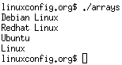
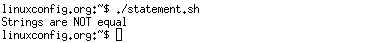
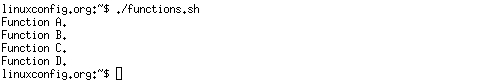
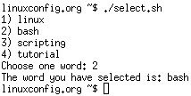
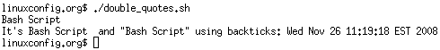

Bash scripting Tutorial
Last Updated on Wednesday, 02 November 2011 06:35
>PDF DOWNLOAD< >PDF DOWNLOAD< |
This bash script tutorial assumes no previous knowledge of bash scripting.As you will soon discover in this quick comprehensive bash scripting guide, learning the bash shell scripting is very easy task. However, if you do not find an answer to your questions by reading this bash tutorial or you need extra help, feel free to ask us on our new Linux Forum. We will be more than happy to help you with your bash questions there. Lets begin this bash scripting tutorial with a simple "Hello World" script. Let's start with Learning the bash Shell: Unix Shell Programming Bash Scripting Beginners Guide FREE PDF DOWNLOAD Bash Scripting Advanced Guide FREE PDF DOWNLOAD |
1. Hello World Bash Shell Script
First you need to find out where is your bash interpreter located. Enter the following into your command line:
$ which bash
Open up you favorite text editor and a create file called hello_world.sh. Insert the following lines to a file:
NOTE:Every bash shell script in this tutorial starts with shebang:"#!" which is not read as a comment. First line is also a place where you put your interpreter which is in this case: /bin/bash.
Here is our first bash shell script example:
#!/bin/bash
# declare STRING variable
STRING="Hello World"
#print variable on a screen
echo $STRING
Navigate to a directory where your hello_world.sh is located and make the file executable:
$ chmod +x hello_world.sh
Now you are ready to execute your first bash script:
./hello_world.sh
2. Simple Backup bash shell script
#!/bin/bash
tar -czf myhome_directory.tar.gz /home/linuxconfig
3. Variables
In this example we declare simple bash variable and print it on the screen ( stdout ) with echo command.
#!/bin/bash
STRING="HELLO WORLD!!!"
echo $STRING
Your backup script and variables:
#!/bin/bash
OF=myhome_directory_$(date +%Y%m%d).tar.gz
tar -czf $OF /home/linuxconfig
3.1. Global vs. Local variables
#!/bin/bash
#Define bash global variable
#This variable is global and can be used anywhere in this bash script
VAR="global variable"
function bash {
#Define bash local variable
#This variable is local to bash function only
local VAR="local variable"
echo $VAR
}
echo $VAR
bash
# Note the bash global variable did not change
# "local" is bash reserved word
echo $VAR
4. Passing arguments to the bash script
#!/bin/bash
# use predefined variables to access passed arguments
#echo arguments to the shell
echo $1 $2 $3 ' -> echo $1 $2 $3'
# We can also store arguments from bash command line in special array
args=("$@")
#echo arguments to the shell
echo ${args[0]} ${args[1]} ${args[2]} ' -> args=("$@"); echo ${args[0]} ${args[1]} ${args[2]}'
#use $@ to print out all arguments at once
echo $@ ' -> echo $@'
# use $# variable to print out
# number of arguments passed to the bash script
echo Number of arguments passed: $# ' -> echo Number of arguments passed: $#'
/arguments.sh Bash Scripting Tutorial
5. Executing shell commands with bash
#!/bin/bash
# use backticks " ` ` " to execute shell command
echo `uname -o`
# executing bash command without backticks
echo uname -o
6. Reading User Input
#!/bin/bash
echo -e "Hi, please type the word: \c "
read word
echo "The word you entered is: $word"
echo -e "Can you please enter two words? "
read word1 word2
echo "Here is your input: \"$word1\" \"$word2\""
echo -e "How do you feel about bash scripting? "
# read command now stores a reply into the default build-in variable $REPLY
read
echo "You said $REPLY, I'm glad to hear that! "
echo -e "What are your favorite colours ? "
# -a makes read command to read into an array
read -a colours
echo "My favorite colours are also ${colours[0]}, ${colours[1]} and ${colours[2]}:-)"
7. Bash Trap Command
#!/bin/bash |
|
8. Arrays
8.1. Declare simple bash array
#!/bin/bash
#Declare array with 4 elements
ARRAY=( 'Debian Linux' 'Redhat Linux' Ubuntu Linux )
# get number of elements in the array
ELEMENTS=${#ARRAY[@]}
# echo each element in array
# for loop
for (( i=0;i<$ELEMENTS;i++)); do
echo ${ARRAY[${i}]}
done

8.2. Read file into bash array
#!/bin/bash
# Declare array
declare -a ARRAY
# Link filedescriptor 10 with stdin
exec 10<&0
# stdin replaced with a file supplied as a first argument
exec < $1
let count=0
while read LINE; do
ARRAY[$count]=$LINE
((count++))
done
echo Number of elements: ${#ARRAY[@]}
# echo array's content
echo ${ARRAY[@]}
# restore stdin from filedescriptor 10
# and close filedescriptor 10
exec 0<&10 10<&-
Bash script execution with an output:
linuxconfig.org $ cat bash.txt
Bash
Scripting
Tutorial
Guide
linuxconfig.org $ ./bash-script.sh bash.txt
Number of elements: 4
Bash Scripting Tutorial Guide
linuxconfig.org $
9. Bash if / else / fi statements
9.1. Simple Bash if/else statement
Please note the spacing inside the [ and ] brackets! Without the spaces, it won't work!
#!/bin/bash
directory="./BashScripting"
# bash check if directory exists
if [ -d $directory ]; then
echo "Directory exists"
else
echo "Directory does not exists"
fi
9.2. Nested if/else
#!/bin/bash
# Declare variable choice and assign value 4
choice=4
# Print to stdout
echo "1. Bash"
echo "2. Scripting"
echo "3. Tutorial"
echo -n "Please choose a word [1,2 or 3]? "
# Loop while the variable choice is equal 4
# bash while loop
while [ $choice -eq 4 ]; do
# read user input
read choice
# bash nested if/else
if [ $choice -eq 1 ] ; then
echo "You have chosen word: Bash"
else
if [ $choice -eq 2 ] ; then
echo "You have chosen word: Scripting"
else
if [ $choice -eq 3 ] ; then
echo "You have chosen word: Tutorial"
else
echo "Please make a choice between 1-3 !"
echo "1. Bash"
echo "2. Scripting"
echo "3. Tutorial"
echo -n "Please choose a word [1,2 or 3]? "
choice=4
fi
fi
fi
done
10. Bash Comparisons
10.1. Arithmetic Comparisons
| -lt | < |
| -gt | > |
| -le | <= |
| -ge | >= |
| -eq | == |
| -ne | != |
#!/bin/bash
# declare integers
NUM1=2
NUM2=2
if [ $NUM1 -eq $NUM2 ]; then
echo "Both Values are equal"
else
echo "Values are NOT equal"
fi
#!/bin/bash
# declare integers
NUM1=2
NUM2=1
if [ $NUM1 -eq $NUM2 ]; then
echo "Both Values are equal"
else
echo "Values are NOT equal"
fi
#!/bin/bash
# declare integers
NUM1=2
NUM2=1
if [ $NUM1 -eq $NUM2 ]; then
echo "Both Values are equal"
elif [ $NUM1 -gt $NUM2 ]; then
echo "NUM1 is greater then NUM2"
else
echo "NUM2 is greater then NUM1"
fi
10.2. String Comparisons
| = | equal |
| != | not equal |
| < | less then |
| > | greater then |
| -n s1 | string s1 is not empty |
| -z s1 | string s1 is empty |
#!/bin/bash
#Declare string S1
S1="Bash"
#Declare string S2
S2="Scripting"
if [ $S1 = $S2 ]; then
echo "Both Strings are equal"
else
echo "Strings are NOT equal"
fi

#!/bin/bash
#Declare string S1
S1="Bash"
#Declare string S2
S2="Bash"
if [ $S1 = $S2 ]; then
echo "Both Strings are equal"
else
echo "Strings are NOT equal"
fi
11. Bash File Testing
| -b filename | Block special file |
| -c filename | Special character file |
| -d directoryname | Check for directory existence |
| -e filename | Check for file existence |
| -f filename | Check for regular file existence not a directory |
| -G filename | Check if file exists and is owned by effective group ID. |
| -g filename | true if file exists and is set-group-id. |
| -k filename | Sticky bit |
| -L filename | Symbolic link |
| -O filename | True if file exists and is owned by the effective user id. |
| -r filename | Check if file is a readable |
| -S filename | Check if file is socket |
| -s filename | Check if file is nonzero size |
| -u filename | Check if file set-ser-id bit is set |
| -w filename | Check if file is writable |
| -x filename | Check if file is executable |
#!/bin/bash
file="./file"
if [ -e $file ]; then
echo "File exists"
else
echo "File does not exists"
fi
Similarly for example we can use while loop to check if file does not exists. This script will sleep until file does exists. Note bash negator "!" which negates the -e option.
#!/bin/bash
while [ ! -e myfile ]; do
# Sleep until file does exists/is created
sleep 1
done
12. Loops
12.1. Bash for loop
#!/bin/bash
# bash for loop
for f in $( ls /var/ ); do
echo $f
done
Running for loop from bash shell command line:
$ for f in $( ls /var/ ); do echo $f; done
12.2. Bash while loop
#!/bin/bash
COUNT=6
# bash while loop
while [ $COUNT -gt 0 ]; do
echo Value of count is: $COUNT
let COUNT=COUNT-1
done
12.3. Bash until loop
#!/bin/bash
COUNT=0
# bash until loop
until [ $COUNT -gt 5 ]; do
echo Value of count is: $COUNT
let COUNT=COUNT+1
done
12.4. Control bash loop with
Here is a example of while loop controlled by standard input. Until the redirection chain from STDOUT to STDIN to the read command exists the while loop continues.
#!/bin/bash
# This bash script will locate and replace spaces
# in the filenames
DIR="."
# Controlling a loop with bash read command by redirecting STDOUT as
# a STDIN to while loop
# find will not truncate filenames containing spaces
find $DIR -type f | while read file; do
# using POSIX class [:space:] to find space in the filename
if [[ "$file" = *[[:space:]]* ]]; then
# substitute space with "_" character and consequently rename the file
mv "$file" `echo $file | tr ' ' '_'`
fi;
# end of while loop
done
13. Bash Functions
!/bin/bash
# BASH FUNCTIONS CAN BE DECLARED IN ANY ORDER
function function_B {
echo Function B.
}
function function_A {
echo $1
}
function function_D {
echo Function D.
}
function function_C {
echo $1
}
# FUNCTION CALLS
# Pass parameter to function A
function_A "Function A."
function_B
# Pass parameter to function C
function_C "Function C."
function_D

14. Bash Select
#!/bin/bash
PS3='Choose one word: '
# bash select
select word in "linux" "bash" "scripting" "tutorial"
do
echo "The word you have selected is: $word"
# Break, otherwise endless loop
break
done
exit 0

15. Case statement conditional
#!/bin/bash
echo "What is your preferred programming / scripting language"
echo "1) bash"
echo "2) perl"
echo "3) phyton"
echo "4) c++"
echo "5) I do not know !"
read case;
#simple case bash structure
# note in this case $case is variable and does not have to
# be named case this is just an example
case $case in
1) echo "You selected bash";;
2) echo "You selected perl";;
3) echo "You selected phyton";;
4) echo "You selected c++";;
5) exit
esac
16. Bash quotes and quotations
Quotations and quotes are important part of bash and bash scripting. Here are some bash quotes and quotations basics.
16.1. Escaping Meta characters
Before we start with quotes and quotations we should know something about escaping meta characters. Escaping will suppress a special meaning of meta characters and therefore meta characters will be read by bash literally. To do this we need to use backslash "\" character. Example:
#!/bin/bash
#Declare bash string variable
BASH_VAR="Bash Script"
# echo variable BASH_VAR
echo $BASH_VAR
#when meta character such us "$" is escaped with "\" it will be read literally
echo \$BASH_VAR
# backslash has also special meaning and it can be suppressed with yet another "\"
echo "\\"
16.2. Single quotes
Single quotes in bash will suppress special meaning of every meta characters. Therefore meta characters will be read literally. It is not possible to use another single quote within two single quotes not even if the single quote is escaped by backslash.
#!/bin/bash
#Declare bash string variable
BASH_VAR="Bash Script"
# echo variable BASH_VAR
echo $BASH_VAR
# meta characters special meaning in bash is suppressed when using single quotes
echo '$BASH_VAR "$BASH_VAR"'
16.3. Double Quotes
Double quotes in bash will suppress special meaning of every meta characters except "$", "\" and "`". Any other meta characters will be read literally. It is also possible to use single quote within double quotes. If we need to use double quotes within double quotes bash can read them literally when escaping them with "\". Example:
#!/bin/bash
#Declare bash string variable
BASH_VAR="Bash Script"
# echo variable BASH_VAR
echo $BASH_VAR
# meta characters and its special meaning in bash is
# suppressed when using double quotes except "$", "\" and "`"
echo "It's $BASH_VAR and \"$BASH_VAR\" using backticks: `date`"

16.4. Bash quoting with ANSI-C style
There is also another type of quoting and that is ANSI-C. In this type of quoting characters escaped with "\" will gain special meaning according to the ANSI-C standard.
| \a | alert (bell) | \b | backspace |
| \e | an escape character | \f | form feed |
| \n | newline | \r | carriage return |
| \t | horizontal tab | \v | vertical tab |
| \\ | backslash | \` | single quote |
| \nnn | octal value of characters ( see [http://www.asciitable.com/ ASCII table] ) | \xnn | hexadecimal value of characters ( see [http://www.asciitable.com/ ASCII table] ) |
The syntax fo ansi-c bash quoting is: $'' . Here is an example:
#!/bin/bash
# as a example we have used \n as a new line, \x40 is hex value for @
# and \56 is octal value for .
echo $'web: www.linuxconfig.org\nemail: web\x40linuxconfig\56org'
17. Arithmetic Operations
17.1. Bash Addition Calculator Example
#!/bin/bash
let RESULT1=$1+$2
echo $1+$2=$RESULT1 ' -> # let RESULT1=$1+$2'
declare -i RESULT2
RESULT2=$1+$2
echo $1+$2=$RESULT2 ' -> # declare -i RESULT2; RESULT2=$1+$2'
echo $1+$2=$(($1 + $2)) ' -> # $(($1 + $2))'
17.2. Bash Arithmetics
#!/bin/bash
echo '### let ###'
# bash addition
let ADDITION=3+5
echo "3 + 5 =" $ADDITION
# bash subtraction
let SUBTRACTION=7-8
echo "7 - 8 =" $SUBTRACTION
# bash multiplication
let MULTIPLICATION=5*8
echo "5 * 8 =" $MULTIPLICATION
# bash division
let DIVISION=4/2
echo "4 / 2 =" $DIVISION
# bash modulus
let MODULUS=9%4
echo "9 % 4 =" $MODULUS
# bash power of two
let POWEROFTWO=2**2
echo "2 ^ 2 =" $POWEROFTWO
echo '### Bash Arithmetic Expansion ###'
# There are two formats for arithmetic expansion: $[ expression ]
# and $(( expression #)) its your choice which you use
echo 4 + 5 = $((4 + 5))
echo 7 - 7 = $[ 7 - 7 ]
echo 4 x 6 = $((3 * 2))
echo 6 / 3 = $((6 / 3))
echo 8 % 7 = $((8 % 7))
echo 2 ^ 8 = $[ 2 ** 8 ]
echo '### Declare ###'
echo -e "Please enter two numbers \c"
# read user input
read num1 num2
declare -i result
result=$num1+$num2
echo "Result is:$result "
# bash convert binary number 10001
result=2#10001
echo $result
# bash convert octal number 16
result=8#16
echo $result
# bash convert hex number 0xE6A
result=16#E6A
echo $result
17.3. Round floating point number
#!/bin/bash
# get floating point number
floating_point_number=3.3446
echo $floating_point_number
# round floating point number with bash
for bash_rounded_number in $(printf %.0f $floating_point_number); do
echo "Rounded number with bash:" $bash_rounded_number
done
17.4. Bash floating point calculations
#!/bin/bash
# Simple linux bash calculator
echo "Enter input:"
read userinput
echo "Result with 2 digits after decimal point:"
echo "scale=2; ${userinput}" | bc
echo "Result with 10 digits after decimal point:"
echo "scale=10; ${userinput}" | bc
echo "Result as rounded integer:"
echo $userinput | bc
18. Redirections
18.1. STDOUT from bash script to STDERR
#!/bin/bash
echo "Redirect this STDOUT to STDERR" 1>&2
To prove that STDOUT is redirected to STDERR we can redirect script's output to file:
18.2. STDERR from bash script to STDOUT
#!/bin/bash
cat $1 2>&1
To prove that STDERR is redirected to STDOUT we can redirect script's output to file:
18.3. stdout to screen
The simple way to redirect a standard output ( stdout ) is to simply use any command, because by default stdout is automatically redirected to screen. First create a file "file1":
$ touch file1 $ ls file1 file1
As you can see from the example above execution of ls command produces STDOUT which by default is redirected to screen.
18.4. stdout to file
The override the default behavior of STDOUT we can use ">" to redirect this output to file:
$ ls file1 > STDOUT $ cat STDOUT file1
18.5. stderr to file
By default STDERR is displayed on the screen:
$ ls file1 STDOUT $ ls file2 ls: cannot access file2: No such file or directory
In the following example we will redirect the standard error ( stderr ) to a file and stdout to a screen as default. Please note that STDOUT is displayed on the screen, however STDERR is redirected to a file called STDERR:
$ ls file1 STDOUT $ ls file1 file2 2> STDERR file1 $ cat STDERR ls: cannot access file2: No such file or directory
18.6. stdout to stderr
It is also possible to redirect STDOUT and STDERR to the same file. In the next example we will redirect STDOUT to the same descriptor as STDERR. Both STDOUT and STDERR will be redirected to file "STDERR_STDOUT".
$ ls file1 STDERR STDOUT $ ls file1 file2 2> STDERR_STDOUT 1>&2 $ cat STDERR_STDOUT ls: cannot access file2: No such file or directory file1
File STDERR_STDOUT now contains STDOUT and STDERR.
18.7. stderr to stdout
The above example can be reversed by redirecting STDERR to the same descriptor as SDTOUT:
$ ls file1 STDERR STDOUT $ ls file1 file2 > STDERR_STDOUT 2>&1 $ cat STDERR_STDOUT ls: cannot access file2: No such file or directory file1
18.8. stderr and stdout to file
Previous two examples redirected both STDOUT and STDERR to a file. Another way to achieve the same effect is illustrated below:
$ ls file1 STDERR STDOUT $ ls file1 file2 &> STDERR_STDOUT $ cat STDERR_STDOUT ls: cannot access file2: No such file or directory file1
or
ls file1 file2 >& STDERR_STDOUT $ cat STDERR_STDOUT ls: cannot access file2: No such file or directory file1


Glad you liked it. Would you like to share?
Sharing this page …
Thanks! Close
Showing 10 of 60 comments
- M Subscribe by email
- S RSS
Load more commentsAdd New Comment
Reactions